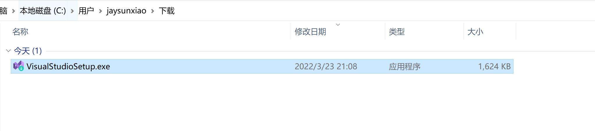
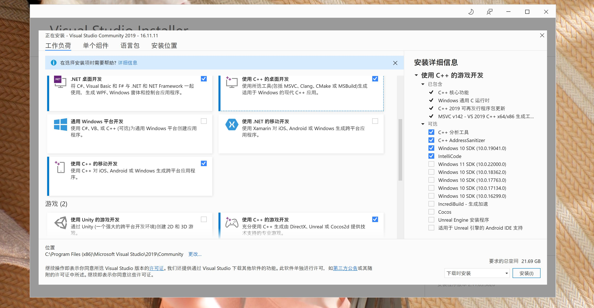
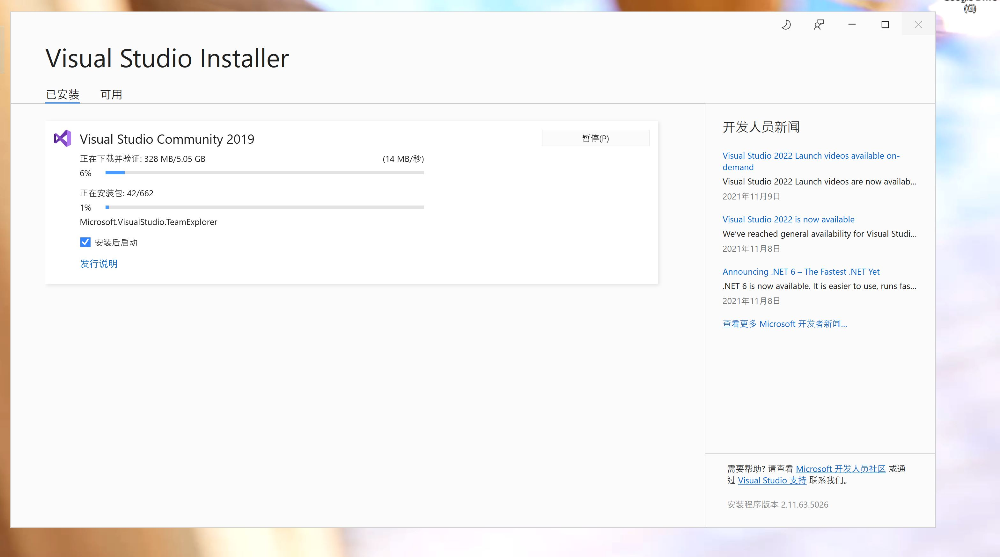
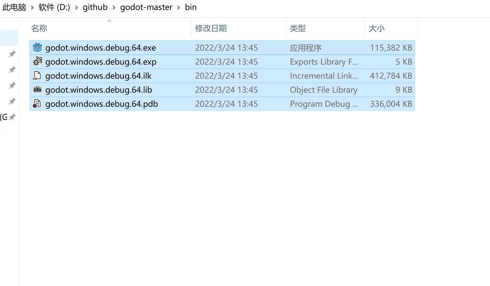
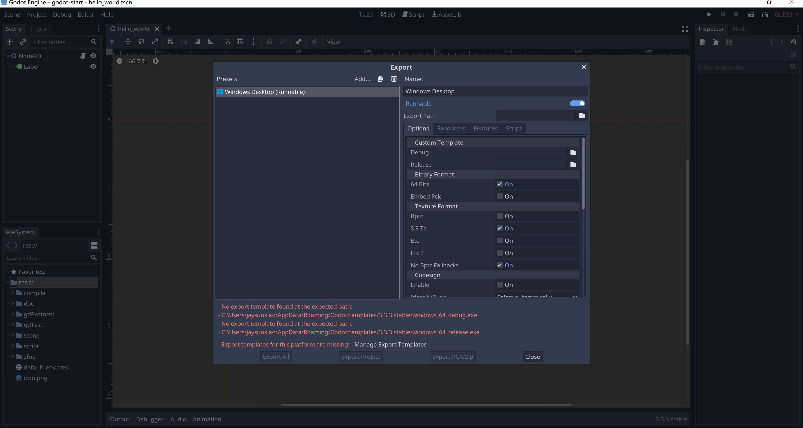
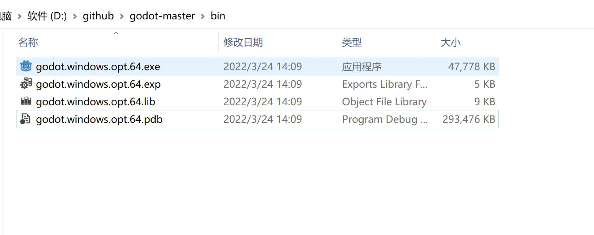
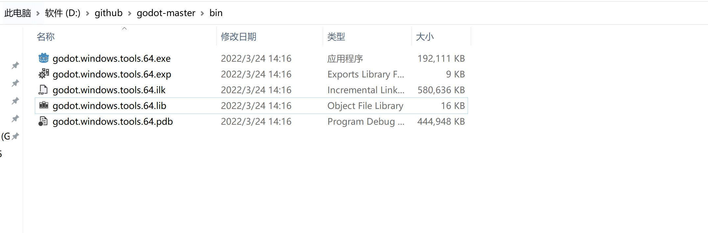
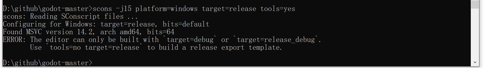
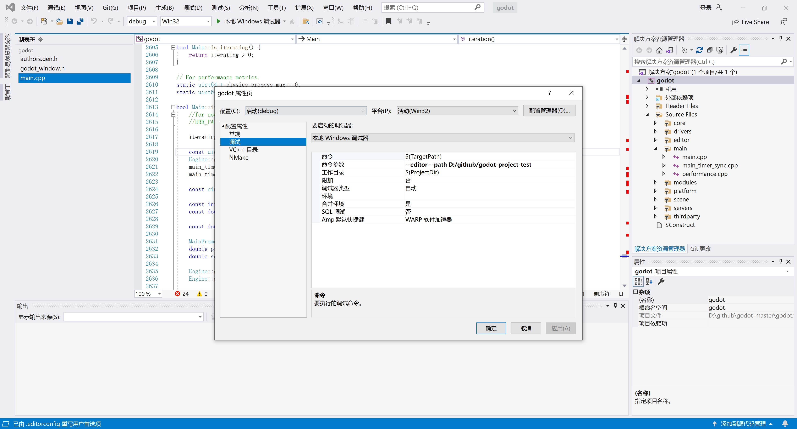

工具准备
- python
- SCons，项目的管理工具
- Visual Studio 或 MinGW-w64，主要提供了C++的编译环境
python
-
官网下载python，选择win64可执行的安装，左下角点击Add Path，自动添加环境变量
-
python -v ，查看版本
-
pip是python的包管理工具，python自带了pip
pip install requests # 普通安装依赖
pip uninstall requests # 卸载
pip install -r install.txt # 从文件中批量安装依赖
pip install requests --proxy="http://127.0.0.1:10809" # 通过代理下载依赖
pip list # 已经安装的库
pip install --upgrade requests
SCons
- 安装godot的项目依赖管理工具SCons
- pip install SCons --proxy="http://127.0.0.1:10809"
- 在命令行输入scons，看有没有反应，没有安装会提示没有这个命令
Visual Studio
- 官网下载Visual Studio 2019，然后选择C++编译工具安装就行
- 如果不想安装VS，那么使用C++编译工具MinGW依然可以
  
MinGW-w64
- MinGW 的全称是：Minimalist GNU on Windows
- 它实际上是将经典的开源 C语言 编译器 GCC 移植到了 Windows 平台下，并且包含了 Win32API ，因此可以将源代码编译为可在 Windows 中运行的可执行程序
- 还可以使用一些 Windows 不具备的，Linux平台下的开发工具
- 一句话来概括：MinGW 就是 GCC 的 Windows 版本，MinGW-w64 是开源软件，可以免费使用
- https://winlibs.com/ ，选择UCRT runtime下载，解压过后将bin配置在Path环境变量中，如D:\Program\mingw64\bin
g++ --version
clang --version
Compile
- 常规编译参数
scons platform=windows # 默认去寻找VS的编译环境，找不到会寻找MinGW的编译环境
scons platform=windows use_mingw=yes # 强制使用mingw编译
scons -j6 platform=windows # 多线程编译
scons platform=windows bits=32 # 软件是64位还是32位置，bits=64 或者 bits=32
- 生产版本发布，默认打包是debug+tools
target=release_debug
target=release # 生产环境发布，可以加快编译速度和减小包的体积 q q
target=debug
- scons -j15 platform=windows target=debug tools=no 
tools编辑器选项，godot里，所有带有tools的，是带编辑器的，不带tools是模板
tools可以在debug、release或者release_debug三种都可以，默认release是不带tools的
完成后，将这个打包好的exe丢到模板目录
%USERPROFILE%AppDataRoamingGodottemplates对应godot版本号
打包的文件叫godot.windows.opt.64，就把这个放入上述目录，对印的opt打包名字就改成windows_64_release
完成后就可以通过export导出项目或者将新增加的内容打包为pck作为dlc使用了

- scons -j15 platform=windows target=release tools=no 
opt是optimized production template的缩写，是优化过后的模板，这个打包更加的耗时
-
scons -j15 platform=windows target=debug tools=yes ，等价于scons -j15 platform=windows 
-
scons -j15 platform=windows target=release tools=yes 
-
其它编译参数
scons platform=windows use_lto=yes # MinGW的编译环境，使用这个参数可以让发布的体积更加小，但是需要更多的机器内存
Android Compile
- 增减一个环境变量，这里使用Android Studio自动下载的SDK，ANDROID_SDK_ROOT=C:\Users\jaysunxiao\AppData\Local\Android\Sdk
- 添加到Path环境变量，%ANDROID_SDK_ROOT%\tools; %ANDROID_SDK_ROOT%\platform-tools;
godot.windows.tools.64.exe --editor --path D:/github/godot-project-test
scons -j15 platform=windows use_mingw=yes
scons -j15 platform=android use_mingw=yes target=release android_arch=arm64v8
使用Visual Studio调试Godot的源代码
- scons platform=windows vsproj=yes
使用命令创建vs的解决方案
-
再使用Visual Studio双击打开sln解决方案
-
设置调试参数 
使用Clion调试Godot的源代码
-
使用Clion打开项目的文件（根目录）
-
Clion会让你选择一个CMake文件，选择platform/android/java/nativeSrcsConfigs/CMakeLists.txt
-
在Terminal控制台使用命令打开godot编辑器，godot.windows.tools.64.exe --editor --path D:/github/godot-project-test
-
然后Attache到godot的process